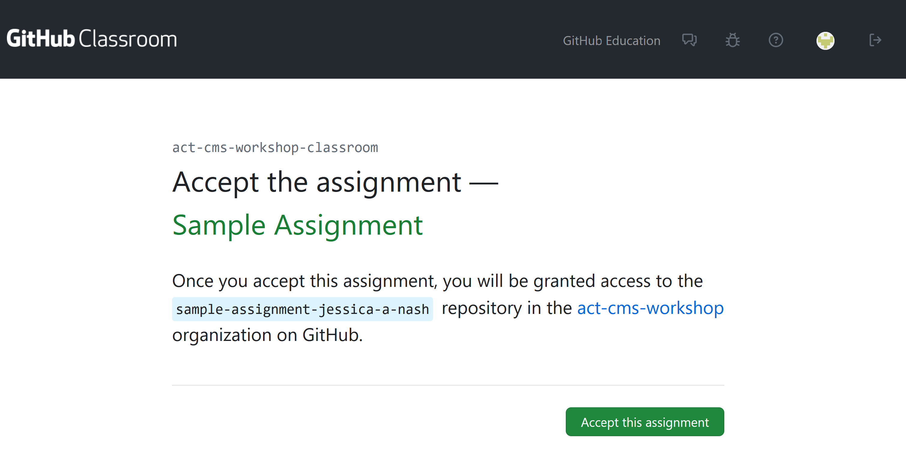
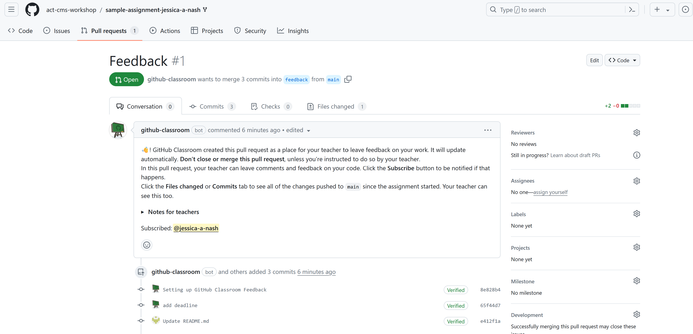
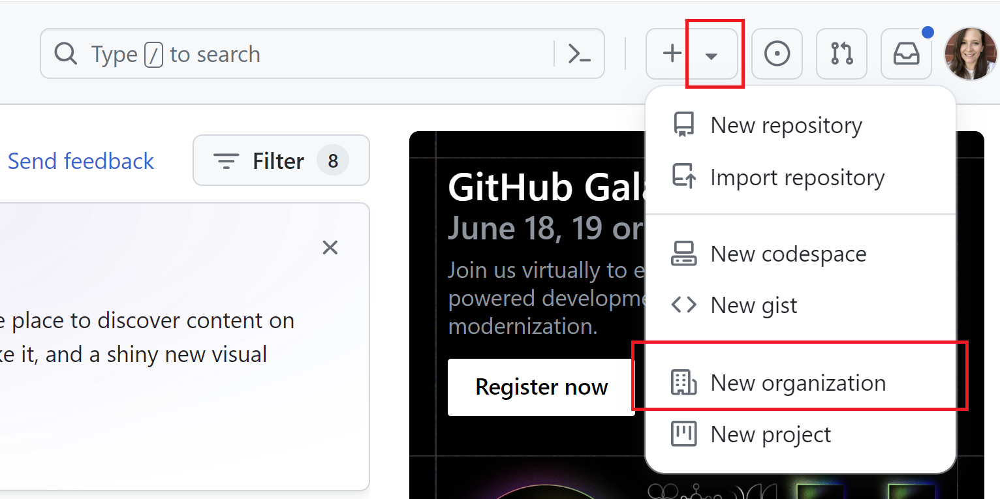
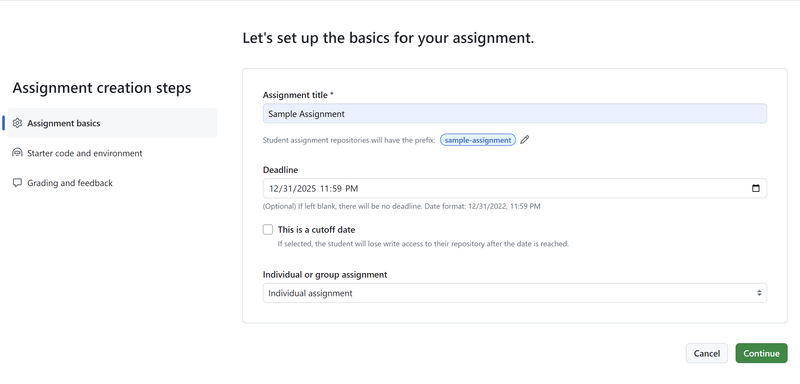
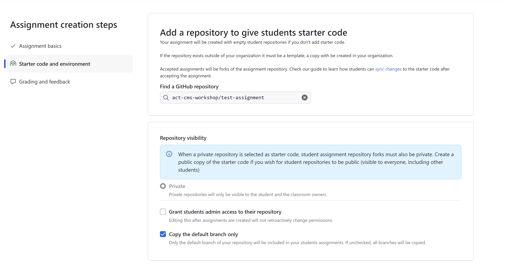
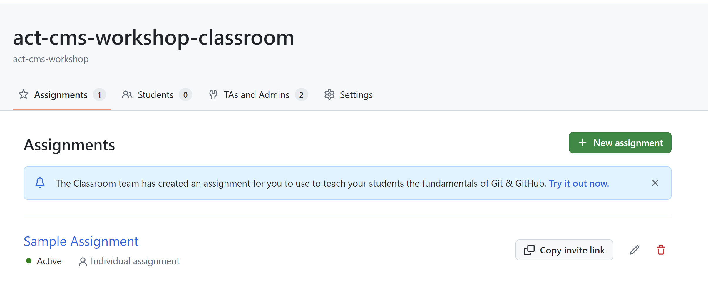
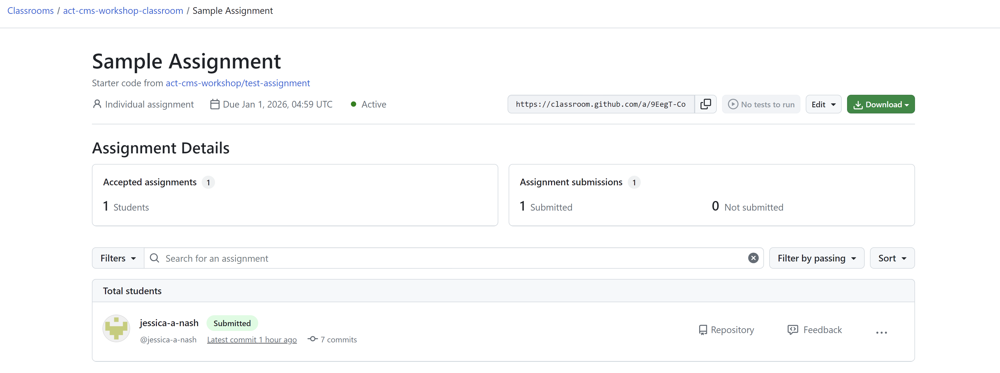
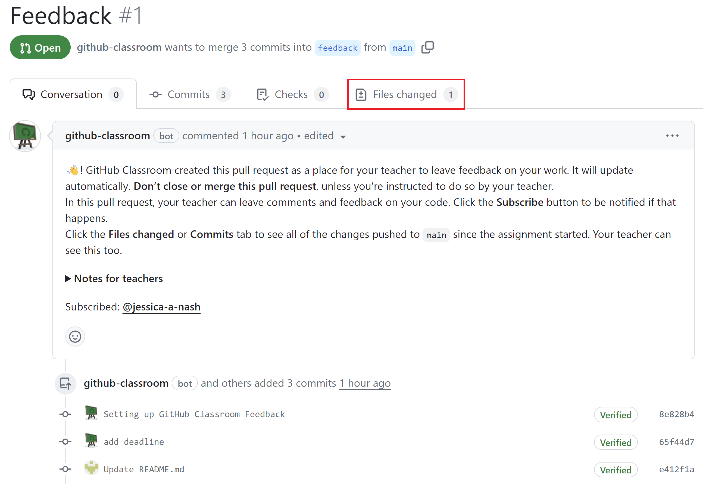
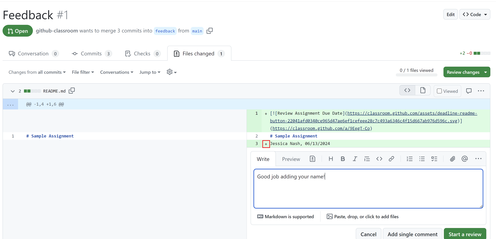

Assignment Management using GitHub Classroom#
For classroom code management, we recommend using GitHub Classroom. GitHub Classroom is a tool that helps you manage and collect programming assignments. It integrates directly with GitHub and uses GitHub repositories for holding code assignments. Later in the lessons, we will discuss how different computational platforms can integrate with GitHub and GitHub Classroom. GitHub Classroom allows you to create an assignment, distribute it to students, and collect their work. It also provides you with a way to grade the assignments and provide feedback to students.
This lesson will cover how to set up a GitHub Classroom including our recommendend method for creating organizations, how to create assignments, and how to access student work as well as provide feedback.
Prerequisites
Before completing this tutorial, make sure you have signed up for a GitHub account and are logged in.
GitHub Classroom - The Student’s Perspective#
Before we dive into talking about the instructor’s view of a GitHub Classroom, it will first be helpful to get accquainted with the student’s perspective. After we understand what GitHub Classroom looks like to a student, we will talk about how to set it up as an instructor. When using GitHub Classroom, students will start assignments by clicking links that you provide. These links will create the student’s assignment under their GitHub username and the student will have a repository with the starting code and assignment instructions.
Accepting an Assignment#
Students start assignments by clicking links that you provide. You can put these links on your learning management system, in an email, or on a website. When a student clicks the link, they will be asked to accept the assignment.
You can start the sample assignment by clicking this link.
The first time you click an assignment link, you will be asked to authorize GitHub Classroom to access your account. After authorization, you will see a page very similar to the screenshot below:

After accepting the assignment, you will have your own repository with the assignment starter code. This starter code is designed by you, the course instructor, to include the necessary files and structure for the assignment. It is also beneficial for the starter code to include a README file with instructions for the assignment.
Turning in work#
To complete the assignment, the student will need to make changes to the code in their repository. When they are ready to turn in their work, they will need to commit and push their changes to their repository.
To get an idea of how this works, let’s make an edit to the README file in the repository you just created.
Click the pencil icon in the upper right corner of the README file to edit the file. Add your name and the date to the file and then save the changes.
In order to turn in work using GitHub Classroom, the student will need to modify the files that are in the repository on GitHub. In a later lesson, we will talk about how this can be done with some recommended computational platforms. For the sake of this example, we will keep our changes simple and edit the README file directly on GitHub.
Viewing Feedback#
This assignment has been set up to use Pull Request Feedback. This means that GitHub opens a Pull Request on the repository when the assignment is created so that instructors and students can easily see the changes that are made. Click the “Pull Requests” tab at the top of the repository to see the pull request.
You will a screen similar to the one below:

This allows instructors to see all changes as they are made (a complete history of changes and when they are done is kept), and comment on the changes.
GitHub Classroom Instructor Perspective#
Now that you’ve seen what GitHub Classroom looks like from the student’s perspective, let’s talk about how to set up a GitHub Classroom as an instructor. As an instructor, you will need to complete a few steps to set up a GitHub Classroom. After the Classroom is created, you can create assignments, distribute them to students, and collect their work.
Creating a classroom requires you to
Create a GitHub Organization.
Create a GitHub Classroom linked to your organization.
Your GitHub organization will host all starting code for your assignments as well as your students’ repositories.
Creating a GitHub Organization#
To create a GitHub Organization, click the dropdown menu in the upper right corner of the GitHub page and select “New organization” (see screenshot below):

You will be prompted for your organization plan type, choose the Free tier. As a verified educator, you will be able to upgrade your Organization to the Team plan for free. On the next page, enter the name of your organization and a description. Usually, you’ll want your organization to be named after your course.
Upgrade to GitHub Team
If you are a verified educator, you can upgrade your organization to the Team plan for free. Note that this is not necessarily required, but will get you access to more features. Go to GitHub Education and click the Green button that says “Upgrade to GitHub Team”. Choose your the organization you just created to upgrade.
Creating a GitHub Classroom#
After your organization is created, you should create a GitHub Classroom. Go to GitHub Classroom and sign in. After signing in, click the green “New Classroom” button. On the next page, choose the organization you just created and give your classroom a name.
Creating an Assignment#
After your classroom is created, you can add assignments to the classroom. The first step in this will typically be creating the starting code or instructions for the assignment. You can create your starting code in a way that you’re used to preparing your starting code. If you need guidance on this, please see the previous lesson on using GitHub Desktop. You should then add this to a repository under your organization on GitHub. You can choose for this starting code to be either public or private.
Including Instructions
It is recommended to include instructions for the assignment in the README.md file of the starting code repository. GitHub will display the README file to students when they accept the assignment.
After creating your starting code repository, you can add the assignment to your classroom. From the classroom page, click the green “New Assignment” button.
You will see a series of pages that allow you to set up your assigment.

On this page, you can give your assignment a title, set a deadline, and specify if it is a group or individual assignment. By setting a deadline and cut-off date, you can control when students can they work on an assignment. If you do not choose a cut-off date, students will be able to work on the assignment indefinitely. However, GitHub Classroom will mark the assignment as late if it is turned in after the deadline.
On the next page, you can specify the repository that contains the starting code for the assignment.

You should choose the repository you created earlier as the starting code for the assignment.
On the final page of assignment creation, make sure you choose to enable Pull Request Feedback.
After you have created the assignment, you can distribute it to students by sharing the assignment link. The students will have a similar experience to that described in the student perspective section above.
Accessing Student Work#
After students have turned in their work, you can access it by going to the assignment page in GitHub Classroom. Click the assignment name to see all student repositories associated with the assignment.

From this page, you can click on a student’s repository to see their work.

Once a student has made any changes to their repository, you will see a green “submitted” badge next to their name. However, note that they will be able to continue making changes to their repository. If they make changes after the deadline, GitHub Classroom will mark the assignment as late using a yellow badge.
Providing Feedback#
Click the “Feedback” button on the student assignment to be taken to the Pull Request that was created when the assignment was accepted. From here, you can leave general comments on the assignment as well as comments on specific lines of code.
To view specific changes the student has made on their code, click the “Files changed” tab.

From this tab, you can see all changes the student has made to their code and leave comments on specific lines. To leave a comment on a specific line of code or text that the student has added, click the “plus” sign that appears next to the line.

From here, you can either leave a single comment, or Start a Review. A Review will allow you to leave multiple comments on the code and then submit them all at once with an overall comment.